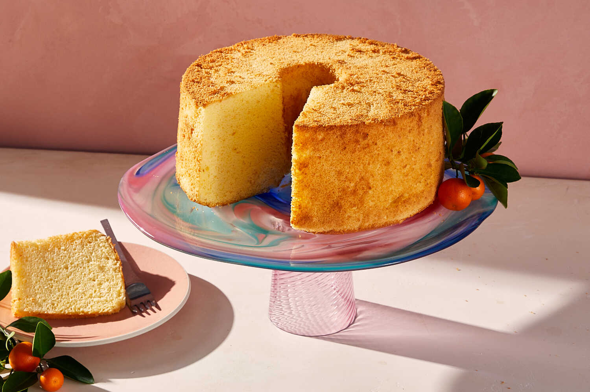

This airy sponge cake was invented in 1927 by Harry Baker, a California insurance salesman-turned-baker. He kept the recipe secret for 20 years until he sold it to the Washburn-Crosby Company, today General Mills, who introduced it in 1948 with a major Betty Crocker marketing blitz, publishing a set of 14 different recipe variations.
Meal prep time : 1 hour 20 minutes
Servings : 16